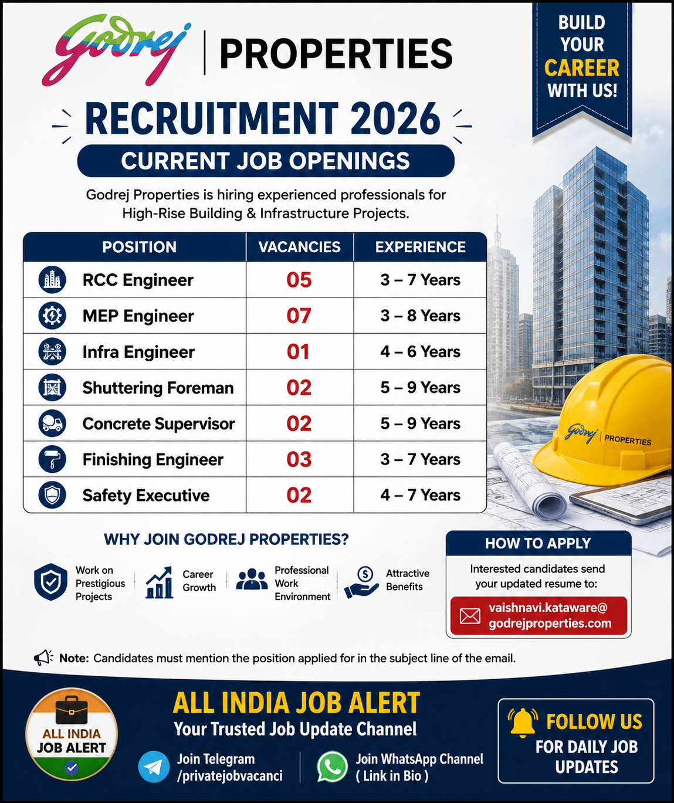

Company: Godrej Properties
Job Type: Full Time
Industry: Real Estate, Construction & Infrastructure
Recruitment Year: 2026
Experience: 2–9 Years depending on position
Application Mode: Email
Godrej Properties has announced current job openings for experienced professionals in the construction and real estate sector. The recruitment drive includes opportunities for engineers, supervisors and safety professionals with experience in RCC construction, MEP services, infrastructure work, shuttering, concrete supervision, finishing activities and construction safety.
This recruitment opportunity can be useful for candidates who are looking for career growth in the construction and real estate industry. Applicants with relevant qualifications and practical project experience are encouraged to apply with an updated resume.
| Position | Vacancies | Experience |
|---|---|---|
| RCC Engineer | 05 | 3–7 Years |
| MEP Engineer | 07 | 3–8 Years |
| Infra Engineer | 01 | 4–6 Years |
| Shuttering Foreman | 02 | 5–9 Years |
| Concrete Supervisor | 02 | 5–9 Years |
| Finishing Engineer | 03 | 3–7 Years |
| Safety Executive | 02 | 4–7 Years |
The RCC Engineer position is suitable for professionals experienced in reinforced cement concrete construction. Responsibilities may include monitoring reinforcement, shuttering and concreting activities, checking work according to approved drawings, coordinating with contractors and maintaining construction quality.
The MEP Engineer role is suitable for professionals with experience in mechanical, electrical and plumbing services in building construction. Candidates may be responsible for site coordination, checking installations, reviewing drawings, monitoring progress and coordinating MEP contractors with civil construction teams.
The Infra Engineer may be responsible for infrastructure-related construction activities, site supervision, contractor coordination, measurements, quality checking, documentation and progress monitoring. Candidates with practical construction experience can be considered for this opportunity.
The Shuttering Foreman position requires practical experience in formwork and shuttering activities. Responsibilities may include supervising workers, checking shuttering alignment and dimensions, coordinating manpower and ensuring that formwork activities are completed safely and according to project requirements.
The Concrete Supervisor will be involved in supervising concrete-related activities at the project site. Duties can include manpower coordination, concrete pouring supervision, checking work progress and coordinating with different construction teams.
The Finishing Engineer position is suitable for professionals experienced in building finishing activities such as plastering, flooring, tiling, painting, doors, windows, false ceiling and other finishing works. The candidate may coordinate contractors, monitor quality and ensure timely completion.
The Safety Executive role involves monitoring construction-site safety practices, conducting inspections, identifying unsafe conditions, maintaining safety records and supporting implementation of safety procedures. Candidates should have practical knowledge of construction safety requirements.
Educational requirements can vary according to the position. Engineering positions generally require B.E., B.Tech or another relevant technical qualification. Candidates applying for RCC, MEP, Infra and Finishing Engineer positions should have qualifications relevant to their respective field.
For Shuttering Foreman and Concrete Supervisor positions, practical construction experience and technical knowledge are important. Safety Executive applicants should have appropriate safety-related qualifications and relevant construction-site experience.
Selected candidates will perform responsibilities according to their respective positions. Engineers may monitor site execution, coordinate with contractors, check drawings, prepare reports and ensure that construction activities follow approved specifications.
Supervisors and foremen may manage workers, coordinate manpower and monitor daily construction activities. Safety professionals may conduct inspections, maintain safety records and support safe working practices across the project site.
The available recruitment poster does not specify a fixed salary. Salary may depend on the position, qualifications, previous experience, technical skills and interview performance. Candidates should confirm the salary, benefits and employment terms directly with the recruitment team before accepting any offer.
The available poster does not specify one single location for all positions. Candidates should confirm the exact project location, site requirements and transfer conditions with the recruitment team during the recruitment process.
Email:
vaishnavi.kataware@godrejproperties.com
Candidates should send an updated resume mentioning the position they are applying for and their relevant experience.
Suggested Subject:
Application for RCC Engineer – Recruitment 2026
Candidates should verify recruitment details before sharing personal documents or accepting an employment offer. Never pay money to anyone in exchange for a job, interview or selection. Always verify the recruiter and employment terms before proceeding.
Get the latest private jobs, government jobs, engineering jobs, construction jobs, supervisor jobs, safety jobs and other recruitment updates.
📲 Join WhatsApp Channel